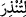
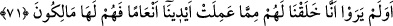

kalmayınca geriye sadece inadlaşma kalır. Bu yüzden de cezâyı hak ederler.
Burada “kâfirler”in “diri olanlar”a mukabil olarak getirilmesi, kâfirlerin mârifetten
ibaret olan hayatın eserlerinden ve hükümlerinden boş ve uzak olduklarından dolayı
hakikatte ölü olduklarını hissettirmek içindir. Onların durumu henüz kendisine ruh
üfürülmemiş cenin gibidir. Şu halde mârifet îmana, İslâm’a ve ihsana götürür. Ma’rifet
ehli ise ölmez, bilakis bir yerden diğer yere göç ederler.
Allah Teâlâ ruhunu rahat ettirsin Hz. şeyhim ve senedim der ki: “Uyku ve uyanıklık
hâli, basîretin uyanıklığına işarettir. Uyanma vakti, işin başında kalbin uyanması gibidir.
Sonra abdest için harekete geçmek, tevbe ve inâbeye işârettir. Sonra namaza başlamak,
ilâhî teveccühe, mülk ve nâsût âleminden geçip melekût âlemine girmeye işârettir.
Harekette bereket vardır. Nitekim Mevlânâ der ki:
Bu dünyâda bulunmak, firkatim/ayrılığım olmasaydı
“Biz O’na döneceğiz” denmezdi. (bk. el-Bakara, 2/156)
Sonra uyarmak hakîkatte Hz. Peygamber (s.a.)’in sıfatıdır. Âyet muhâtab tâ’sı ile “__WORD__(senin uyarman için)” şeklinde de okunmuştur. Ardından uyarmak Hz. Peygamber
(s.a.)’in işinde basiret üzere olan ekmel vârisinin sıfatıdır.
Şeyh Üftâde (k.s.) der ki: “Dört mertebeyi bilmeyenin vaaz etmesi uygun değildir.
Çünkü bu insan safra hastalığını balgam ilacıyla tedâvî etmeye kalkar. Evet, eğer Allah
rızâsı için vaaz ederse sevap kazanır, fakat zerre kadar terakkî hâsıl olmaz. Çünkü
vâizin mutlaka hangi âyetin tabîat, hangi âyetin nefisle ilgili olduğunu bilmesi gerekir.
Bundan dolayı ashâb (r.a.) gözlerinden kanlı yaşlar döktüler.”
Kâfirler ve gafiller gibi kimin kalbinin ölümü ya da katılaşması ile hakkında ezelî
hüküm vâcip olmuşsa bu kimse uyarıdan etkilenmez. Çünkü boz doğan kuşu, diri olan
avı avlar. Allah’tan dirilik ve uyanıklık; her uyarıdan, tenbih ve öğütten etkilenmeyi
niyâz ederiz.
71. Görmüyorlar mı ki, biz kudretimizin eseri olmak üzere onlar için birçok
hayvan yarattık. Bu sayede onlar bunlara sahip olmuşlardır.
Mekke müşrikleri “Görmüyorlar” düşünmüyor ve görme hükmünde olan kesin
bilgiyle bilmiyorlar “mı ki,” yani elbette gördüler ve bildiler ki “biz” cömertliğimiz
gereği olarak “kudretimizin eseri olmak üzere” meydana getirmeyi bizzat
üstlendiğimiz, bu konuda yardım etme ve sebep olma hususunda bizden başkasını ortak
yapmadığımız şeylerden “onlar için” ve onların faydalanması için “birçok hayvan
yarattık.”
Amel, canlı varlıklardan kasden meydana gelen her fiildir. Amel, fiilden daha özeldir.
Âyette “eller”in zikredilmesi ve amelin ellere isnad edilmesi, elleriyle iş yapan